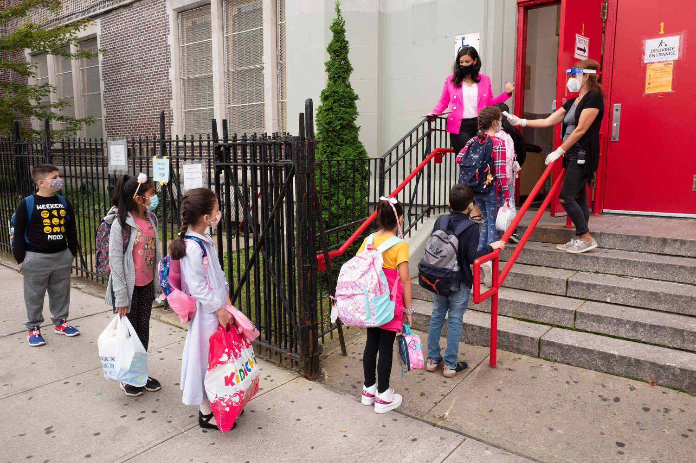

Behind in polls, Republicans see a silver lining in voter registrations
Democrats lead in overall numbers, as well as early
voting, but voter registration gains in three critical
states have given Republicans a cause for hope.
Colorado fights largest wildfire in state history,
second forces thousands to flee
Colorado crews scrambled Monday to gain ground
against two blazes as this year's historic wildfire
season imparted more heartbreak and hardships on
the West.

Surprising Results in Initial Virus Testing in N.Y.
C. Schools
The absence of outbreaks, if it holds, suggests
that the city’s efforts to return children to
classrooms could serve as an influential model for
the nation.
Most read
1
Lauren Fleshman's feminist approach to coaching
2
2,000-year-old cat etching found at Nazca Lines
Site in Peru
3
Some signs of recovery from severe COVID lung
damage
4
Dodgers Rally to win N.L.C.S. and reach 3rd World
Series in 4 years
5
The World's largest tropical wetland has become an inferno